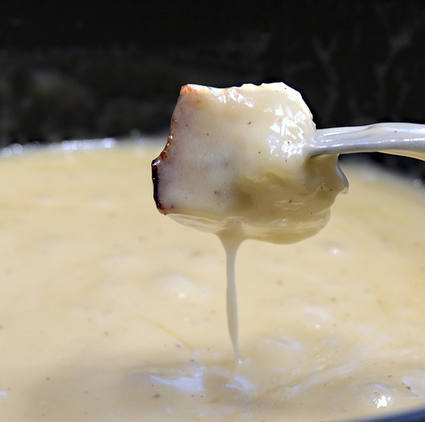
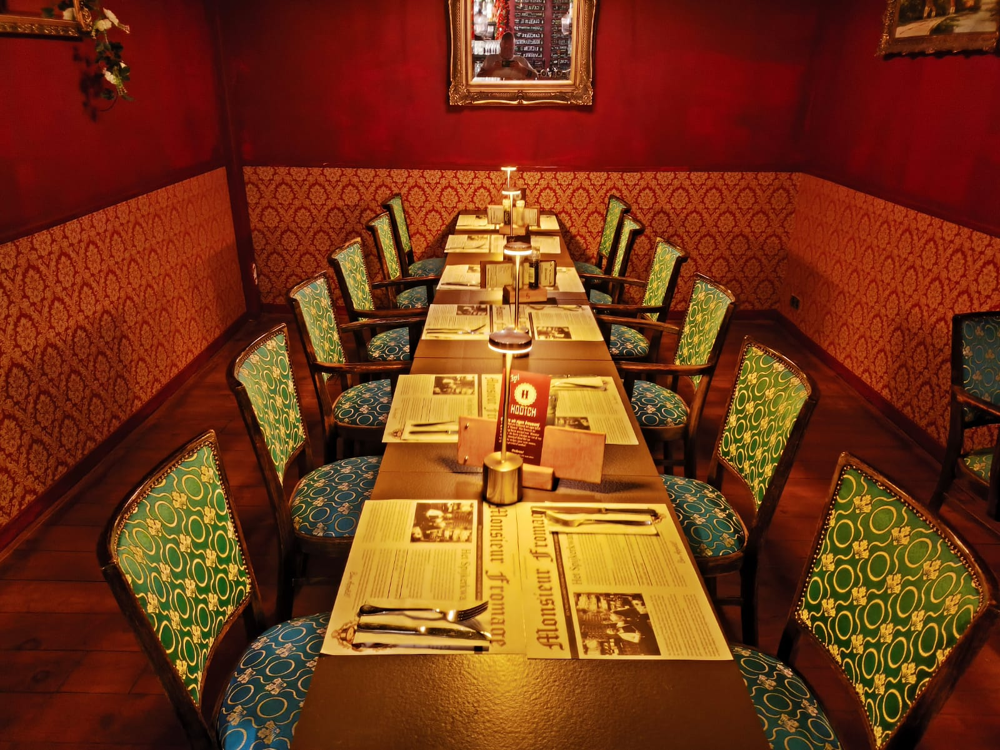
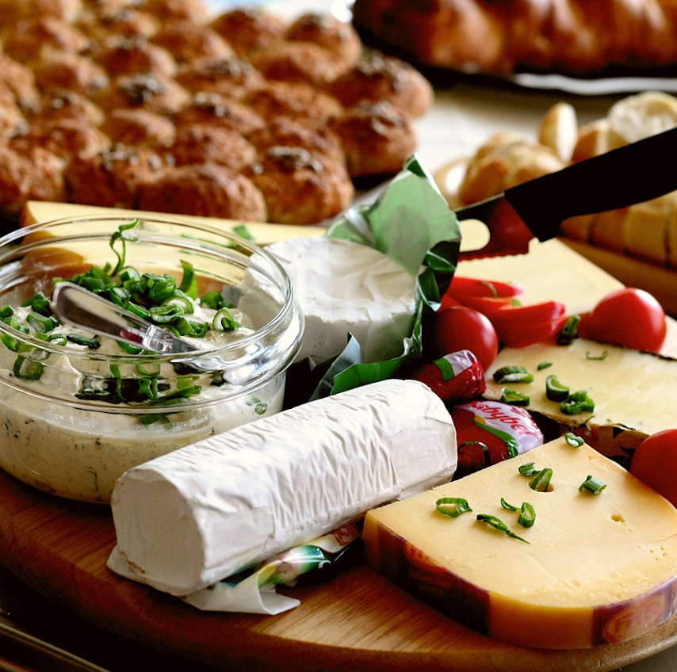
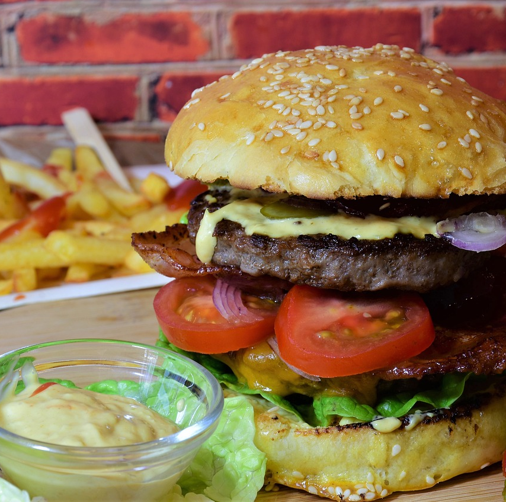
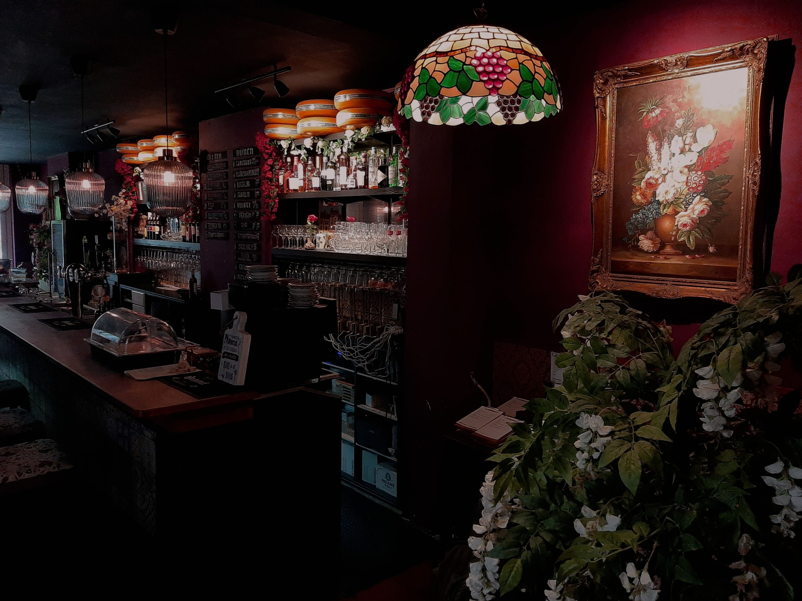

Kaasfondue
Specialiteit van het huis, het hele jaar door. Klassiek, met blauwe kaas of met truffelkaas. Vraag gerust naar wijn- of bieradvies om erbij te drinken.

Bistro met kaas in de hoofdrol, in het Spijkerkwartier van Arnhem
Monsieur Fromage is een gezellige bistro in Arnhem: een kleinschalig eetcafé met een terras voor de deur. Kom bourgondisch genieten van een heerlijk diner. We serveren gerechten met kaas in de hoofdrol, maar ook voor de niet-kaasliefhebber is dit een fantastische plek.
Uiteraard ben je ook welkom voor een borrel. We hebben een ruime keuze uit wijn en speciaalbier, onder andere uit onze eigen brouwerij. Samen met ons team zorgen we ervoor dat je een onvergetelijke tijd beleeft. Bienvenue!
Pim & Sami, eigenaren

Specialiteit van het huis, het hele jaar door. Klassiek, met blauwe kaas of met truffelkaas. Vraag gerust naar wijn- of bieradvies om erbij te drinken.

Iedere week een wisselend assortiment kazen uit de hele wereld, veel uit Frankrijk. Op een grote houten plank waar je zelf de stukjes kaas afsnijdt.

Klassiek met cheddar of met blauwe kaas, op een brioche bun.
Geen kaasliefhebber? Ook dan ben je hier op je plek, bijvoorbeeld voor de entrecote met champignons en optioneel een groene peper- of blauwe-kaassaus.
Alle hoofdgerechten komen met een aantal bijgerechten, die per keer kunnen wisselen. Frietjes zijn los bij te bestellen. Ook voor de niet-cheese lovers genoeg opties!
Heb je een allergie? Meld het ons! Wij gaan uit van minimaal één gerecht per persoon.
Specialiteit van het huis, het hele jaar door.
24,00 p.p.Hoofdgerechten worden geserveerd met drie bijgerechten (bijbestellen + 4,00). Extra: puntzak friet met saus + 4,75. Wij gaan uit van minimaal één gerecht per persoon.
Tip: vraag naar een bijpassende dessertwijn.
Pim is een francofiel in hart en nieren en heeft veel kennis van wijn; Sami is de bierkenner. Vraag gerust naar advies bij je gerecht.
Torres Natureo: wit (Muscat), rosé en rood.
Crémant d'Alsace (Balthazar Fry), Crémant de Bourgogne (Bellenos), Moët & Chandon, Cava uit de Penedès en Café de Paris, ook rosé.
Uit de Elzas, Chablis, Mâcon-Villages, Sancerre, Châteauneuf-du-Pape en de Languedoc, plus wijnen uit Spanje, Italië, Duitsland, Oostenrijk, Nieuw-Zeeland, Zuid-Afrika en Californië.
Uit de Provence en de Languedoc, en uit Veneto en Sicilië.
Beaujolais-Villages, Saint-Émilion Grand Cru, Pauillac, Rioja, Barbera, Amarone, Montepulciano, Primitivo, Malbec uit Mendoza, Syrah uit Nieuw-Zeeland en meer.
Een ruime keuze, onder andere uit onze eigen Brouwerij Hootch. Vraag naar de bierkaart.
Prijzen en voorraad kunnen afwijken van de kaart. Bekijk de complete wijnkaart (pdf)
Kerstavond, 1e en 2e kerstdag
Alle kerstdagen zijn we open! We zitten midden in het Spijkerkwartier, in de mooiste straat van Arnhem. Kom binnen in een uitgedost en warm restaurant, schuif onbezorgd aan en laat je verrassen door een uitgebreid kerstdiner, met de warme en persoonlijke benadering die je van ons gewend bent.
Dit jaar is het een 3-gangen keuzemenu: je kiest gewoon uit de gerechten die je van ons gewend bent. We maken het extra bijzonder met bijzondere bijgerechten en een amuse vooraf, allebei inbegrepen.
3-gangen keuzemenu met amuse en bijzondere bijgerechten
Reserveer voor kerstDe reserveringen gaan snel. Meer dan 8 personen? Bel 026 220 1104.

We hebben een passie voor de gastronomie. Mensen in de watten leggen en de complete ervaring bieden: dat houdt ons dagelijks bezig en maakt ons gelukkig.
Pim is een francofiel in hart en nieren en heeft veel kennis van wijn. Sami heeft een passie voor verschillende keukens en is de bierkenner.
Misschien ken je ons al van Brouwerij Hootch. Sinds 2018 brouwen we onze eigen bieren in hartje Tolkamer. We hopen iedereen gelukkig te maken met onze bistro.
Reserveer online voor een gewone tafel of een plek aan de bar. Voor dezelfde dag of voor groepen van meer dan 8 personen: bel ons even.
Prins Hendrikstraat 11
6828 GN Arnhem
026 220 1104
info@monsieur-fromage.nl
| Woensdag t/m zaterdag | 17:00 – 22:00 |
|---|---|
| Zondag t/m dinsdag | gesloten |
| 27 december t/m 1 januari | gesloten |
Telefonisch bereikbaar woensdag t/m zaterdag van 16:00 tot 22:00. Daarbuiten mag je het ook proberen.
Plan je route